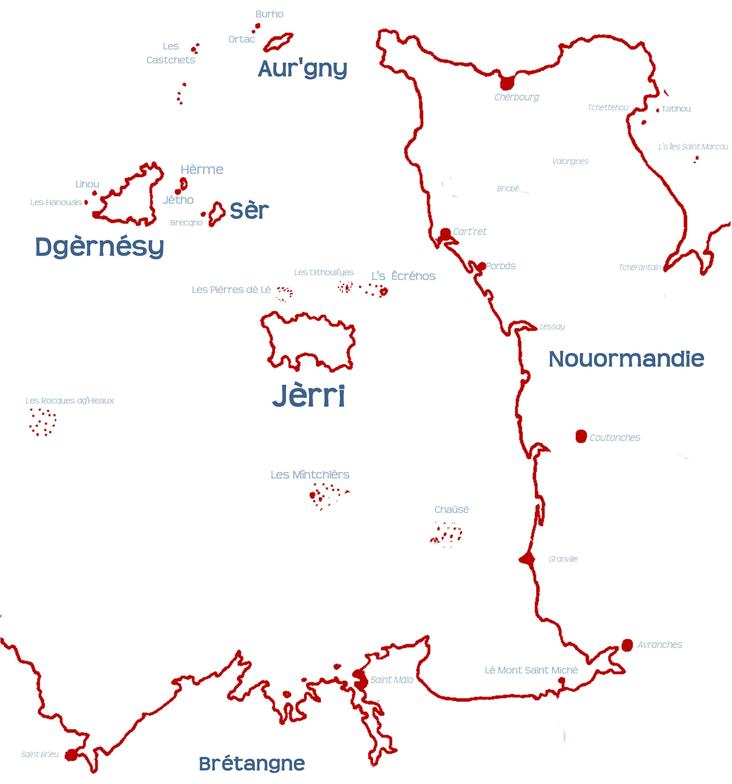

Les crapauds et l's ânes sont-i' d'avis d'co-opéther? À ches drein nou-s'a r'ouï pâler des beinfaits d'eune châr'rie d'èrsources et d'politiques entre les deux bailliages. Lé Sénateu Routier a proposé l'idée d'un marchi c'mun sénon eune unnion însulaithe. Et j'avons dêjà appouainté eune pèrsonne pouor contrôler la seûth'té des vols dans les deux bailliages.
Épis acouo nou-s'a ouï pâler d'eune fédéthâtion si'en cas j'sommes à avanchi pouor l'îndépendance. Assa, y'a d's îles tch'ont fédéthé: par exempl'ye, Saint Kitts et Nevis, les Comores et l's Êtats Fédéthés d'Micronésie. Mais nou dait dithe qu'i' y'a ieu des trébules avaû lé c'mîn d'la fédéthâtion.
S'lon l'patron rêussi du Cannada (fédéthé en 1867) et l'Australie (fédéthée en 1901), lé gouvèrnément Britannique avait engibâtré des fédéthâtions dans tchiques colonnies à seule fîn d'paver lé c'mîn vèrs l'îndépendance. Mais la Fédéthâtion Centrafritchaine (ou la Fédéthâtion d'la Rhodésie et du Nyasaland), fondée en 1953, fut passecrite en 1963 par la hal'lie d's întéthêts des mâjorités des populâtions des tèrritouaithes.
Épis l'histouaithe d'la Fédéthâtion d's Îndes du Vouêt nos mouontre qu'i' y'a souvent du disteurbé entre l'bé et l'morcé. Chutte fédéthâtion-là d'îles ès Caraïbes fut fondée en 1958, mais la Jamaïque donminnait du c'menchement. Du hèrtchîn entre l's îles m'nit à la tchête d'la fédéthâtion en 1962 quand la Jamaïque d'vînt îndépendante. Parmi les tèrritouaithes êchoués, y'avait l'unnion d'Saint Christophe-Nevis-Andgulle. L'Île dé l'Andgulle n'avait janmais voulu êt' pêtrie dans l'même tro qu'les aut's îles: ou r'voltit en 1967 et 1969, fut s'pathée adminnistrativement en 1971 et tchittit l'unnion en 1980. Saint Kitts et Nevis d'vîntent îndépendants coumme eune fédéthâtion en 1983, mais les deux îles ont hèrtchîngni d'pis. La mâjorité d's êlecteurs d'Nevis votîtent en 1998 en faveu d'tchitter la fédéthâtion, mais sans les deux-tchièrs d'mandés par la constitution.
Ch'est-i' pôssibl'ye qu'eune fédéthâtion d's Îles d'la Manche pouôrrait enduther? Jèrri donminn'nait, sans doute, en ristchant d'touônner la fédéthâtion en crapaûdgiéthe. N'oublions pon qu'les Andgulliens mèrquent lé trente dé Mai coumme la Journée d'l'Andgulle - l'annivèrsaithe d'la flianqu'thie horte dé l'île en 1967 d'la Police Rouoyale d'St Kitts. L's ânes sont têtouongnes, mais i' codpîsent bein dû. Si j'sommes à nos fédéther, i' n'faudra pon qu'la police dé Jèrri sait codpîsée horte dé Dgèrnésy auve toute la pêque d'andgulle!
Geraint Jennings
Viyiz étout: